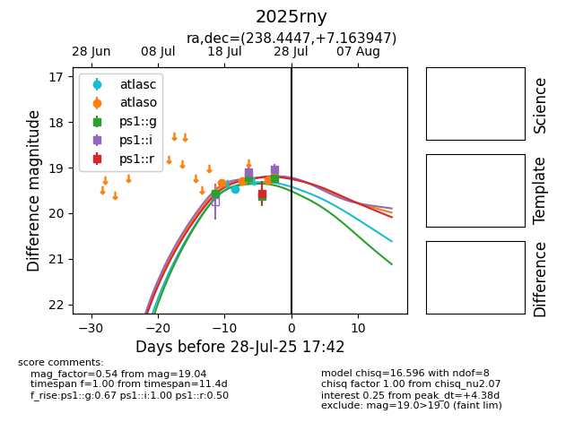

Target 2025rny at 2025-07-28 17:42, see:
YSE: ziggy.ucolick.org/yse/transient_detail/2025rny
alt names
2025rny (yse)
coordinates:
equatorial (ra, dec) = (238.4447,+7.16395)
galactic (l, b) = (16.7515,+42.44315)
photometry
last atlasc=19.47, atlaso=19.18, ps1::g=19.23, ps1::i=19.04, ps1::r=19.56
1 atlasc, 4 atlaso, 4 ps1::g, 2 ps1::i, 1 ps1::r detections
